- 14 days
- Bus, plus 1 day's car hire
- Family on the Gold Coast, solo in Byron
- 3 booked tours in Byron
Ad: some booking links on this page are, or will be, affiliate links. If you book through them I may earn a small commission, at no extra cost to you. I only link to places and trips I actually used and paid for myself, and I say plainly when something wasn't worth it.
Part of my 11 weeks on Australia's east coast and Tasmania. This page covers the Gold Coast and Byron Bay only. Each region works as a block on its own, so you can do just this one or link it to others.
Days to allow
I spent 14 days here: 9 to 15 April on the Gold Coast, then 16 to 21 April in Byron Bay, and left by bus for Brisbane on the morning of 22 April. I'd flown in from Hobart late on the evening of 8 April.
The Gold Coast week was a family stay, so it ran at a slower pace than a visitor on their own might choose. Byron was six nights on my own, with three booked tours, a day surfing and a day in a hire car.
Rich to update: was a week on the Gold Coast and six nights in Byron about right for a visitor, or would you allow more or fewer?
The route at a glance
Gold Coast (Coolangatta, then up the coast) → bus to Byron Bay → day trips to Killen Falls, Broken Head and the hinterland (Nimbin) → bus to Brisbane → bus to the Sunshine Coast.
I didn't hire a car for the stretch. I took a bus from the Gold Coast to Byron, did the hinterland on a group tour, and only hired a car for one day (21 April) when the weather looked marginal. Then a bus to Brisbane and another on to the Sunshine Coast.
What it really cost
Figures are in GBP, per person, unless marked A$. I was with family on the Gold Coast and on my own in Byron. "Paid" means what I actually paid. Everything else is an estimate from my trip plan.
| Per person | |
|---|---|
| Arrival night (Coolangatta Sands Hotel, 8 Apr) | £61 paid |
| Gold Coast, 9–15 Apr (7 nights) | Free (family stay) |
| Byron Bay, 16–21 Apr (6 nights) | estimate £80–120 a night in my plan. Rich to update: what you actually paid |
| Brisbane, 22 Apr (1 night, hostel) | Rich to update |
| Sundive: refresher and Julian Rocks dive | A$403.69 paid |
| Behind The Bay tour (Killen Falls, lake, Broken Head) | £69.24 paid |
| Byron Bay Sea Kayak Tour | £47.77 paid |
| Surfboard hire (20 Apr) | Rich to update |
| Hire car for the hinterland (21 Apr) | Rich to update |
| Bus, Gold Coast → Byron Bay | estimate £24–28 |
| Bus, Byron Bay → Brisbane | estimate £17–35 |
| Bus, Brisbane → Sunshine Coast | estimate £20–50 |
| Day-to-day spending, from my plan's daily estimates (food, getting around and activities, including the three tours above) | Gold Coast 9–15 Apr about £135–330; Byron 16–21 Apr about £790–1,390; travel out 22–23 Apr about £170–320 |
| Total | Rich to update |
Rich to update: whether the plan's daily estimates for Byron include the cabin or not, so the total can be added up without counting anything twice.
Rich to update: what you paid for SeaWorld (13 Apr) and the jetski hire (14 Apr). The plan's Gold Coast estimates were made before these were chosen.
Without family or free stays: my seven Gold Coast nights cost me nothing, so my total understates what you'd pay. Rich to update: what a visitor would pay for 7 nights on the Gold Coast. In Byron I paid for everything myself, so those costs should be close to yours. A couple sharing a room would pay less each for the beds.
Day by day
8 April · eveningArrive at the Gold Coast
I flew in from Hobart late (that day is on the Tasmania page) and spent the night at the Coolangatta Sands Hotel.
Day 1 · 9 AprilCoolangatta beaches
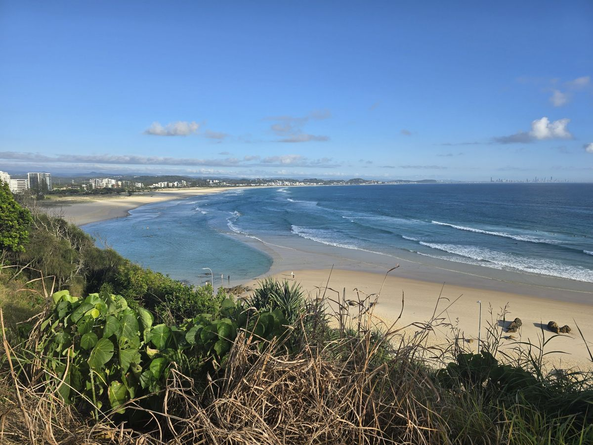
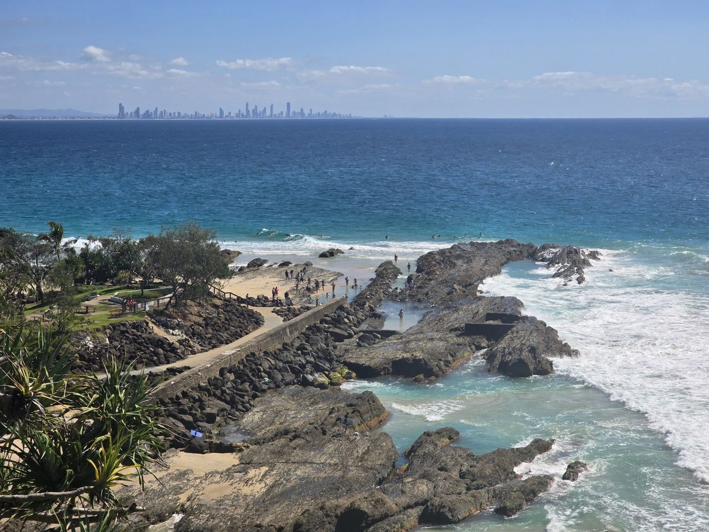
Up at 6am for a walk to the beach, only to find what looked like a thousand people already up: swimming, running, surfing. It was 22 degrees already. I left my bags at the hotel and went for a long walk along the beach, with stops at four bars along the way. A really nice day. Then I met up with family for the rest of the week.
Days 2–4 · 10–12 AprilBeaches, bars and a comic-con
Easy days. Playing in the surf and body surfing, lunches out, and a ride on the tram south to try another beach and a few bars. On 11 April, lunch at the RSL and then SuperNova, a comic-con style event, followed by an evening wander round Surfers Paradise and dinner overlooking the beach. On 12 April we took it slower on purpose, with a swim in the waves and great Thai food in the evening.
Day 5 · 13 AprilSeaWorld
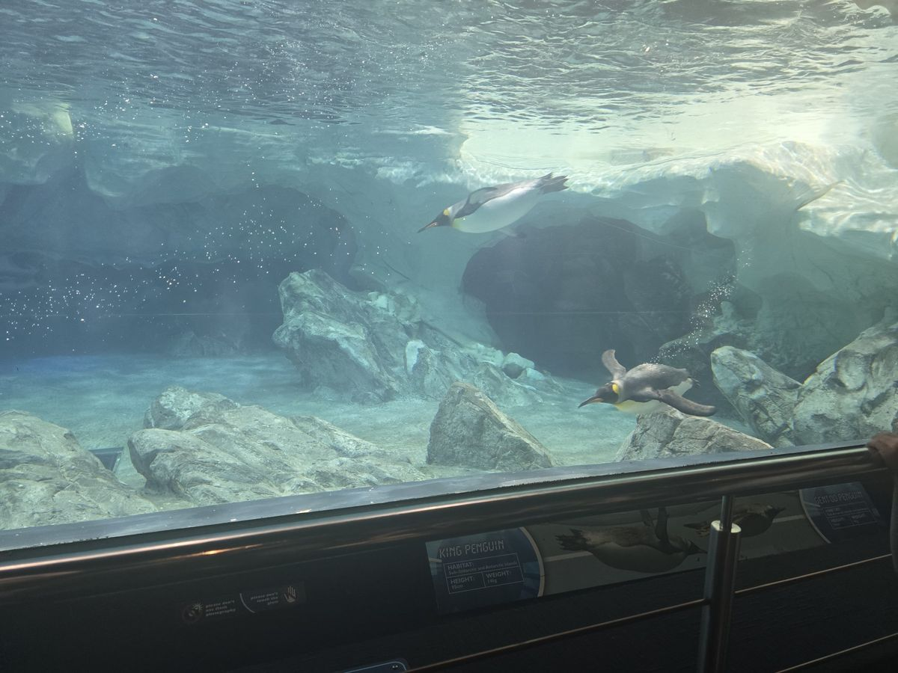
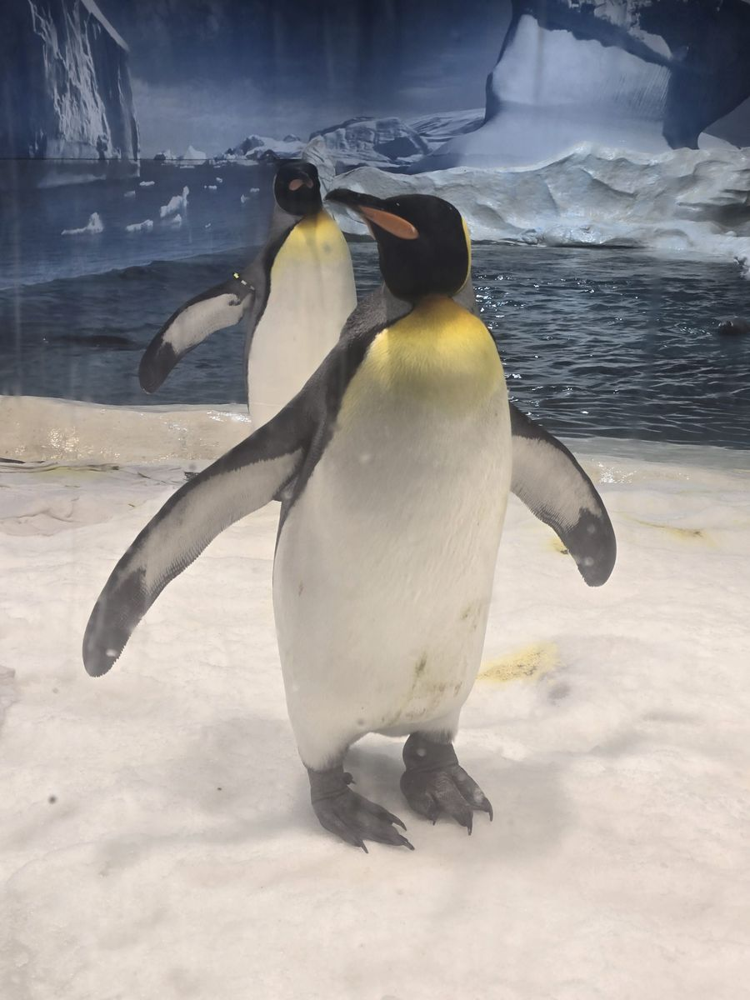
A cooler day, which made it perfect for SeaWorld. We started late and were almost the last out of the gate when they closed. Lots of big rides and lots of the shows. A mega day.
Day 6 · 14 AprilJetskis
We booked jetskis. Great day, and everyone enjoyed it. A stunning sunset to finish, then Taco Tuesday for dinner.
Rich to update: which jetski company, and would you link it?
Day 7 · 15 AprilPickleball
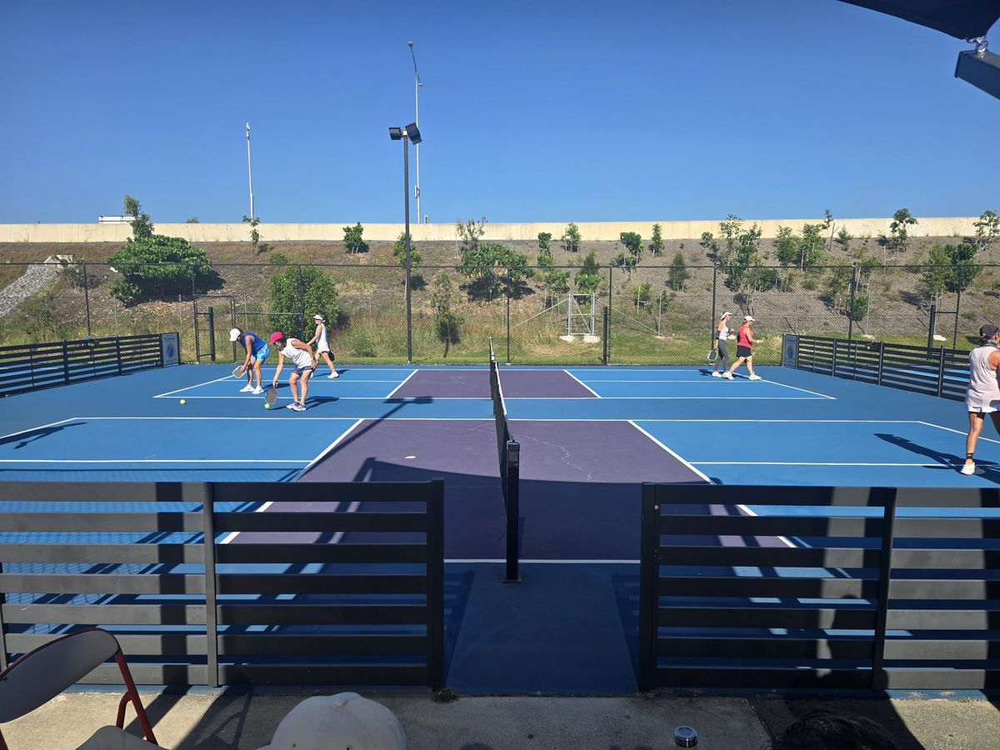
A stunning sunrise. I was up at 5:30am for pickleball an hour away: a good 3.5+ session with 8 courts and 30 people playing a mini tournament. Great fun, but hot. It was the first time I've had to play in sunglasses. Then shopping, bowling and dinner out.
Day 8 · 16 AprilBus to Byron Bay
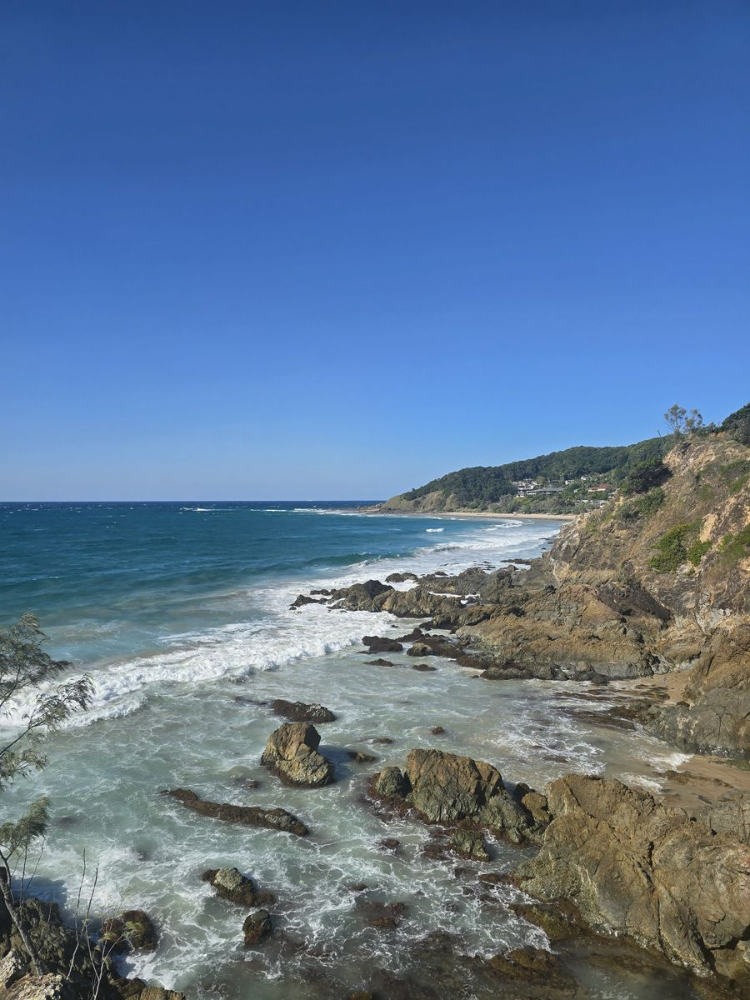
The 8am bus had a problem and turned up at 10, so I got to Byron around midday. That worked out well, because my room was ready. Lunch, then a 4-mile walk down the beach and back. The waves were messy, but The Pass looked like a great spot to try surfing. A couple of hours on the laptop finishing the PADI e-learning for the dive, Thai for dinner and an early night.
Tip: I had PADI e-learning to finish before the dive refresher, so leave a couple of hours for it.
Day 9 · 17 AprilScuba at Julian Rocks
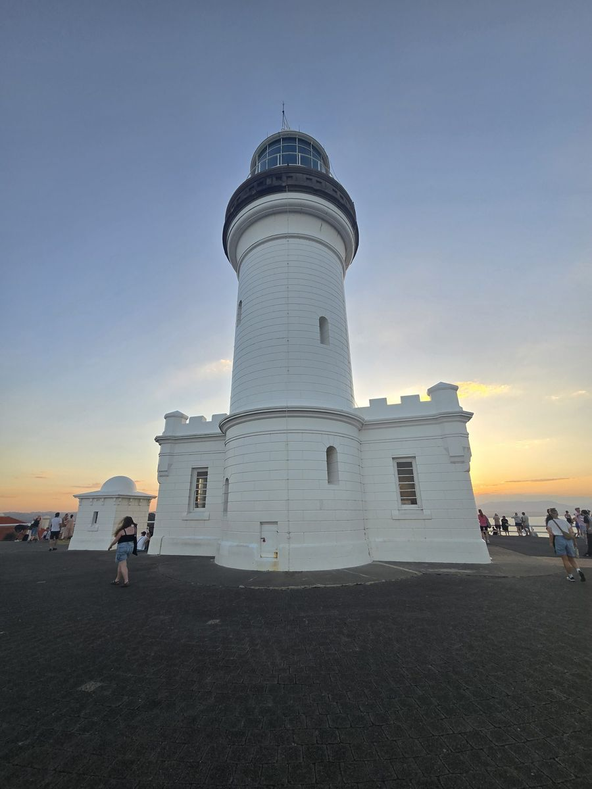
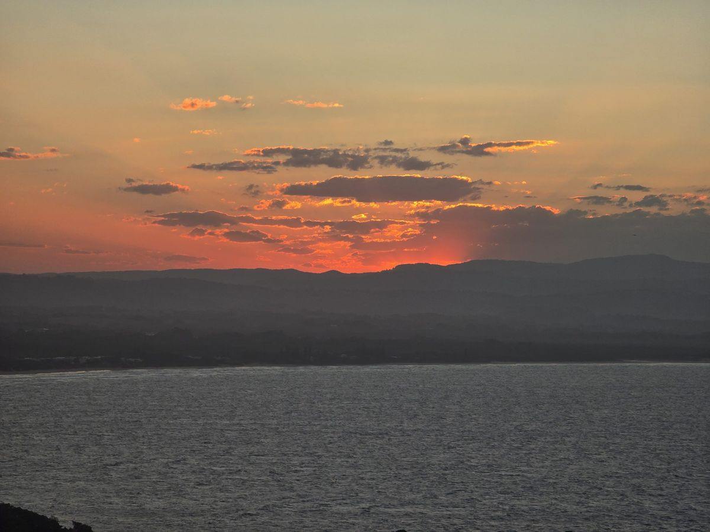
Sunrise coffee at the cabin, then the dive centre (Sundive) for a pool refresher on the kit. Then out to Julian Rocks for a 40-minute dive. We were lucky: over 20 leopard sharks, a big grey nurse shark, a turtle, a big lionfish, and a black and white angelfish about a foot across, inches from my mask. A lovely lunch and a rest after. I went to watch the sunset by the lighthouse, but it was overcrowded and cloudy on the horizon.
Rich to update: was Sundive booked via Viator or direct?
Day 10 · 18 AprilKillen Falls, the tea tree lake and Broken Head
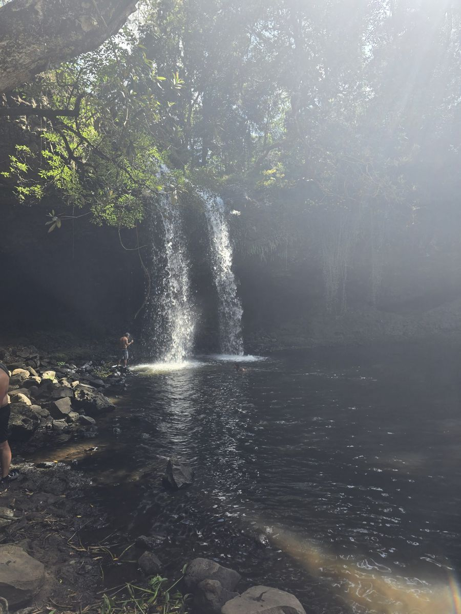
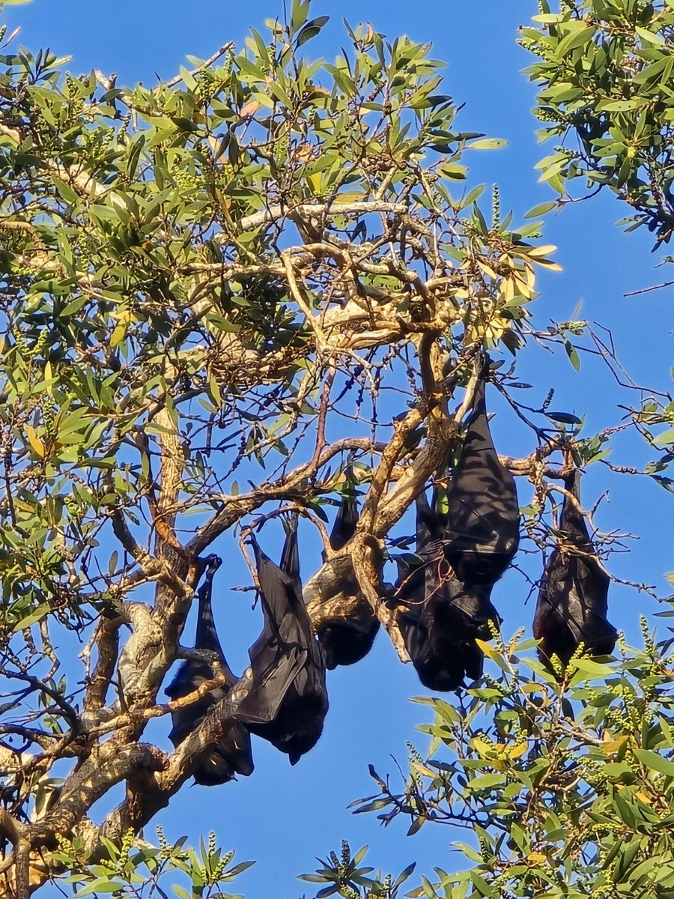
I booked the Behind The Bay tour because it was easier than hiring a car. Killen Falls was pretty cool: you can swim at the bottom and stand under the falls. Then paddleboarding on a freshwater lake surrounded by tea trees, which turns the water brown. We chilled there for a couple of hours, then stopped at Broken Head on the way back. I spotted fruit bats near Byron.
Viator (link coming)
Tip: Byron was rammed on the Saturday night. I grabbed a pizza and had an early night.
Day 11 · 19 AprilSea kayaking with dolphins
The Byron Bay Sea Kayak Tour, and by pure luck the flattest conditions for weeks. Turtles in the distance on the way out, and no dolphins after several stops. Then I spotted some in the surf, a long way off. Over the next hour we saw more than 30, mostly in small groups of 3 to 6, just cruising around. Some came within 10 feet of the kayak. Ace. We stopped for a swim on the way back (several people lost their sunglasses), and I spooked a big loggerhead turtle and saw a baby one. A long lunch and some time on the beach after. Just after sunset I watched thousands of fruit bats take off. Ramen for dinner.
Viator (link coming)
Day 12 · 20 AprilSurfing The Pass
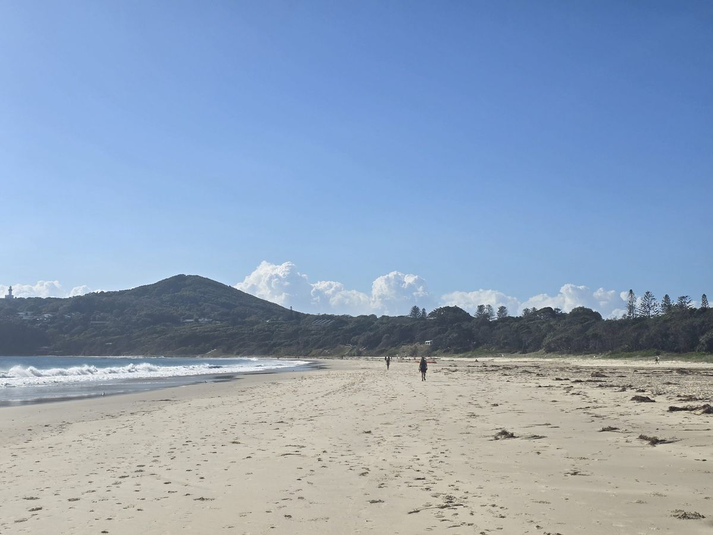
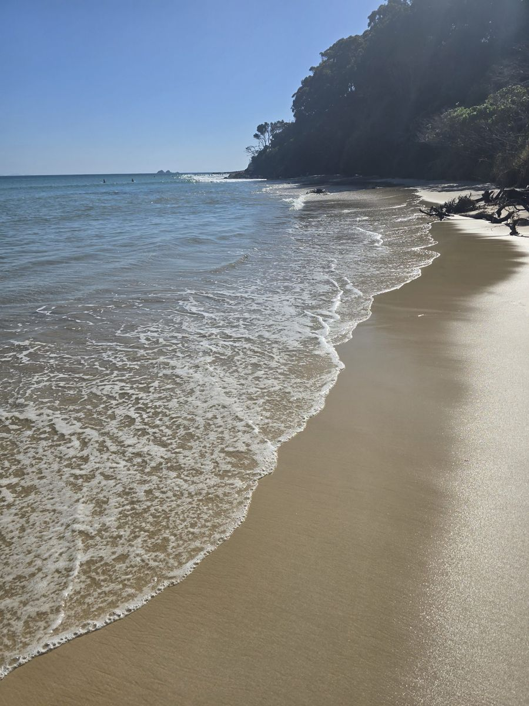
I hired a board and spent a big chunk of the day in the water. Great fun. The sun was fierce even with suncream on, so next time I'd wear a rash vest. More fruit bats in the evening.
Tip: wear a rash vest, not just suncream.
Day 13 · 21 AprilThe hinterland and Nimbin
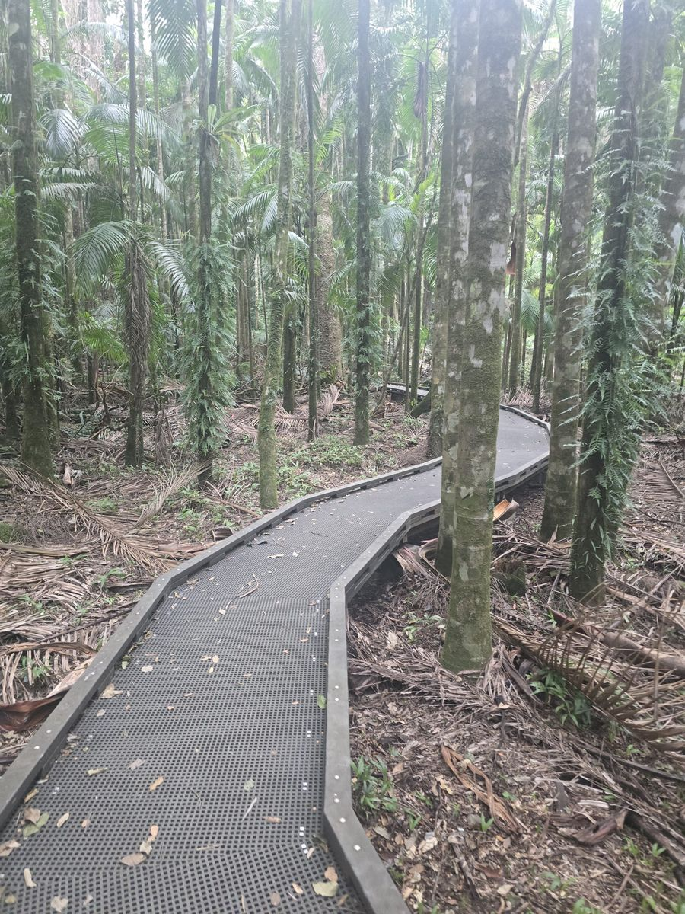
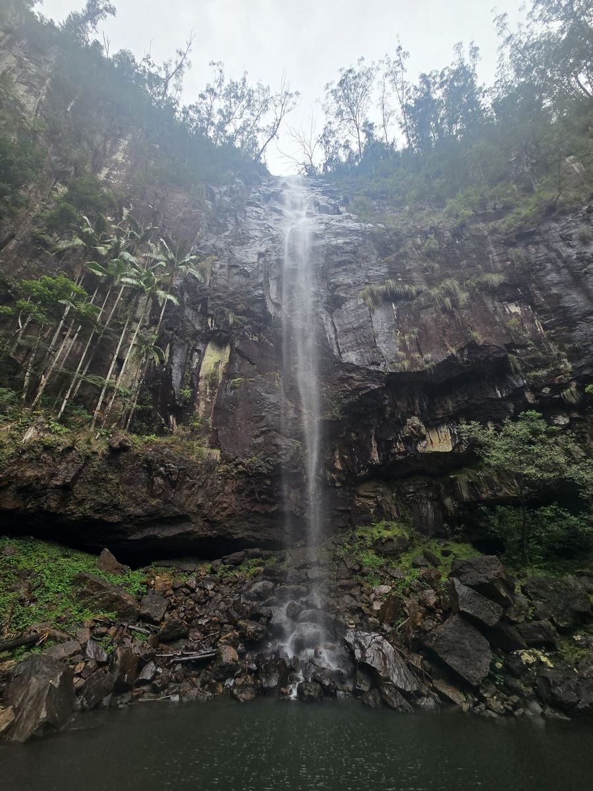
The weather looked marginal, so I hired a car and headed inland towards Nimbin, via a couple of waterfalls. The waterfalls were pretty. I saw a snake warming up on the dirt road and only one other person in 2 hours. Perfect. Nimbin itself was interesting but had an odd vibe: a mix of tourists, wealthier locals and locals who looked to be struggling, and a lot of weed about. I drove back through a couple of small towns, then stopped at a really nice treetop bar for fries and a beer, until it got very busy.
Day 14 · 22 AprilBus to Brisbane
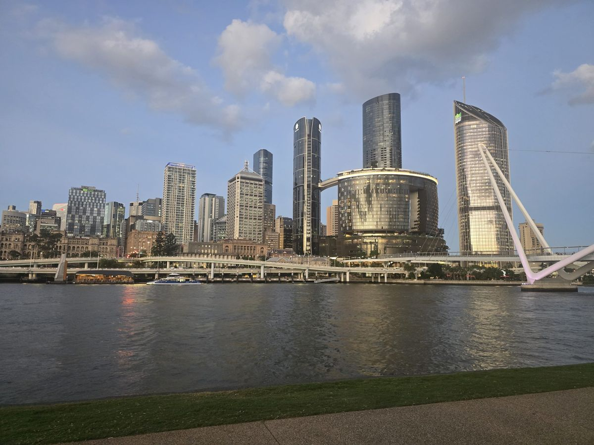
It started wet and cloudy, and luckily I had an early bus to Brisbane, where the forecast was better. A good trip. In Brisbane I stayed in my first hostel of the trip, wandered round the city for a few hours, then played competitive pickleball in the evening. A really good night. The shared room was noisy, though, so I didn't sleep well.
Day 15 · 23 AprilOn to the Sunshine Coast
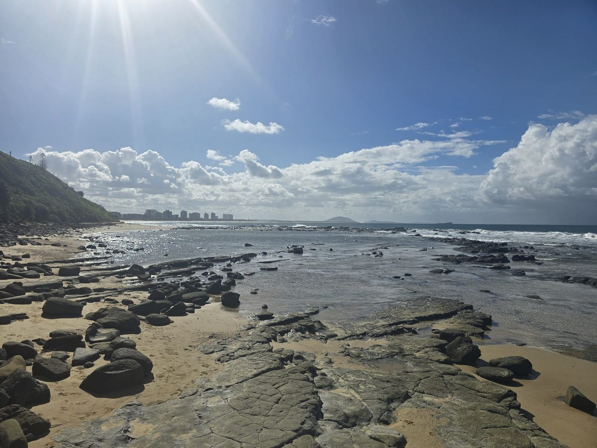
A really good breakfast, where the owner gave me tips for where to go next. I didn't really get on with Brisbane, so I took an earlier bus on to the Sunshine Coast. That's the next region.
Weather plan B
- Hinterland instead of surfing (21 Apr): my plan had a surf lesson that day. The weather looked marginal, so I hired a car for the day and drove inland to waterfalls and Nimbin. Pretty waterfalls and hardly anyone about.
- Leaving Byron (22 Apr): it was wet and cloudy, so an early bus to Brisbane, where the forecast was better, was the right call.
- Theme park on a cooler day (13 Apr): a cooler day on the Gold Coast was perfect for SeaWorld rather than the beach.
- Sea kayak: I was lucky to get the flattest conditions for weeks. Rich to update: what happens to the kayak tour if it's rough?
- Sunset at the lighthouse: cloud on the horizon spoiled it the night I went. Try another evening if you have one.
Do this / skip this
Do this
- Dive Julian Rocks. Leopard sharks, a grey nurse shark, a turtle and more in one 40-minute dive.
- Byron Bay Sea Kayak Tour. Over 30 dolphins, some within 10 feet, plus turtles.
- Behind The Bay tour. Easier than hiring a car, and you get to stand under Killen Falls.
- Watch the fruit bats take off just after sunset in Byron.
- Surf The Pass on a hired board.
- SeaWorld on a cooler day. We stayed until closing.
- Coolangatta beach early. It was already busy at 6am and 22 degrees.
Do differently
- Wear a rash vest when surfing. Suncream wasn't enough.
- Allow slack on bus days. My bus to Byron was 2 hours late.
- Saturday night in Byron is rammed. Plan around it.
- Sunset by the lighthouse gets crowded. If it's cloudy on the horizon, try another night.
- Brisbane: I didn't get on with it and moved on to the Sunshine Coast after one night.
Skip
- Rich to update: anything here you'd tell people to skip?
Ideas from my plan I didn't get to (untested): Currumbin Wildlife Sanctuary, Burleigh Heads walk, Tamborine Mountain and its glow worm caves, Snapper Rocks walk, and the Cape Byron Lighthouse walk (3.7 km loop) with a swim at Wategos or The Pass.
Rich to update: a verdict on Nimbin (worth the drive, or skip?) and on the Gold Coast as a place to base yourself.
Where I stayed
Prices are what I paid for the room. I was on my own in these, so a couple sharing would pay half each. I booked almost all of my hotels on Booking.com.
| Nights | Place | Paid | What I thought | |
|---|---|---|---|---|
| 8 Apr (1 night) | Coolangatta Sands Hotel, Coolangatta | £61 | Basic, and a really hot night | Booking.com (link coming) |
| 9–15 Apr (7 nights) | Family stay, Gold Coast | Free | — | |
| 16–21 Apr (6 nights) | Glen Villa Resort (Double Studio Cabin), Byron Bay, from my plan | Rich to update | Rich to update | Booking.com (link coming) |
| 22 Apr (1 night) | Hostel, Brisbane | Rich to update | Noisy shared room | Rich to update |
Rich to update: confirm you stayed at Glen Villa Resort in Byron. The plan also had a version with a hire car and Crystalbrook Byron on 16 April, but the blog shows you went by bus. Also: the Brisbane hostel's name, and whether it was booked on Booking.com.